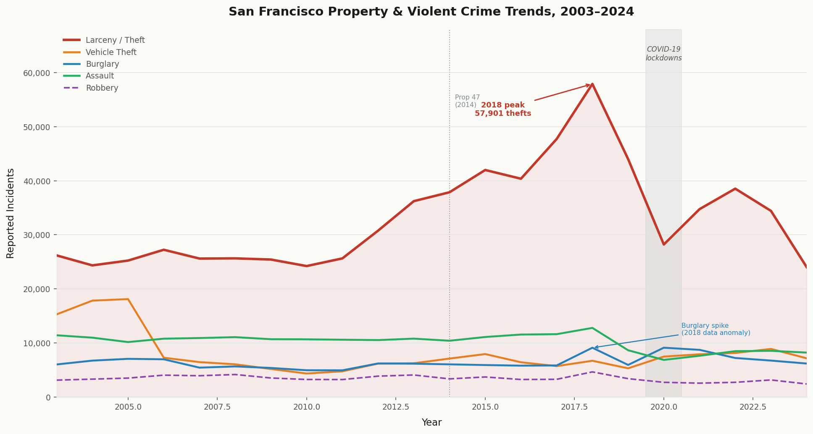

A city that kept making headlines
San Francisco spent much of the 2010s and early 2020s as shorthand for urban dysfunction. Viral videos of people walking out of pharmacies with armloads of goods, cars broken into on every block, tent cities spreading across the Tenderloin. National media latched on. Politicians on both sides used the city as a cautionary tale or a punching bag, depending on the week.
But beneath the headlines there is a dataset. The San Francisco Police Department publishes every incident report filed since 2003 through the city's open data portal. Over three million rows. Each one a date, a time, a neighbourhood, a crime category. It is one of the most detailed urban crime datasets available anywhere, and it tells a story that is more complicated than most of the commentary around it.
This page walks through that story. Not to exonerate or condemn any particular policy, but to show what the numbers actually look like when you sit with them for a while.
About the data
The SFPD Incident Reports dataset is published openly at data.sfgov.org. Each row is one reported incident, with a category, date, time, police district, and approximate location. The key word is reported. This is not a count of crimes that happened. It is a count of crimes that someone filed a report about, which is a related but genuinely different thing. Reporting rates vary by neighbourhood, by crime type, and by year. Changes in police staffing, department policy, and even how incident categories are defined can make numbers move without a single actual crime changing. Keep that in mind throughout.
First, the long climb
From 2003 to around 2012, crime in San Francisco was broadly stable. Roughly 25,000 to 30,000 larceny incidents per year, assault and burglary bouncing around within a predictable range, vehicle theft actually trending downward. Nothing especially alarming.
Then, starting around 2013, larceny began to climb. Slowly at first, then faster. By 2015 it had passed 40,000 incidents per year. By 2017 it was nearly 48,000. In 2018 it peaked at 57,901 reported thefts in a single year. That works out to more than 158 reports filed every single day.
Proposition 47, passed by California voters in November 2014, reclassified theft of property worth under $950 from a felony to a misdemeanor. Critics argued this gutted deterrence and encouraged shoplifters. Supporters said it was a long overdue correction to a system that had been jailing people for stealing a phone charger. Looking at the data, larceny was already rising before Prop 47 passed. Other California cities saw similar trends. The picture is not as clean as either side of that argument would like.
Burglary also spiked unusually in 2018, nearly doubling from prior years before snapping back the following year. That kind of sudden jump and equally sudden retreat usually points to a reporting or classification change rather than a real doubling of break-ins, though the dataset does not let us confirm that directly.

Then COVID changed everything, briefly
When San Francisco entered lockdown in March 2020, the crime numbers fell sharply. This is not a mystery. With downtown offices empty, tourists gone, shops shuttered and streets quiet, there was simply less opportunity for the most common kinds of theft. Fewer people carrying laptops on BART. Fewer tourists with phones out on Market Street. Fewer cars parked in tourist areas. Reported larceny dropped from 44,008 in 2019 to 28,202 in 2020, a fall of more than a third in a single year. Total crime hit its lowest point in over fifteen years.
But as the city reopened, the recovery was uneven in a way that is genuinely interesting. Larceny came back, but it never returned to its pre-pandemic peak. Vehicle theft, on the other hand, surged. From around 5,300 incidents in 2019 it climbed toward 9,000 by 2023. That is a 68% increase over four years, happening while larceny was still running well below its 2018 levels. Reporting by the San Francisco Chronicle linked the surge in part to organised theft rings targeting specific neighbourhoods and vehicle models across the Bay Area.
The geography shifted too. The map below shows where vehicle theft and larceny incidents concentrated between 2022 and 2024. Toggle between the two layers and compare their spatial footprints. Larceny clusters tightly around downtown, SoMa, and the Tenderloin. Vehicle theft spreads out much more evenly across residential neighbourhoods. These are different crimes with different logics, and they respond differently to the same changes in the city.
Crime runs on a schedule
One thing the dataset lets you do that aggregate statistics cannot is look at when crimes happen, not just how many. Different crimes follow remarkably different daily and weekly rhythms, and once you see the patterns side by side it is hard to unsee them.
The chart below shows how five major crime types distribute across hours of the day and days of the week, based on a decade of data from 2015 to 2024. Each cell shows what share of that crime's weekly total occurred in that particular hour and day slot. Darker means more concentrated there. Click through the crime types and see how different the patterns actually are:
- Larceny peaks on Friday and Saturday afternoons. Busy shops, commuters heading home, tourists out in force. This is when bags get grabbed and phones get lifted.
- Assault lives almost entirely in late evenings and weekend nights, the hours after bars close. A completely different kind of risk at a completely different time.
- Vehicle theft runs overnight with a relatively flat weekly profile. No particular weekend surge, no afternoon peak. Cars sit where they are parked.
- Burglary clusters on weekday daytime hours, when homes are empty. Probably the least surprising finding in the whole dataset.
What this data can tell you, and what it cannot
There is a temptation, when looking at charts like the ones on this page, to read them as a straightforward account of what happened to crime in San Francisco. The numbers went up, then down, then partially back. Something must explain each turn. A policy change, perhaps, or economic pressure, or a shift in policing priorities.
But this dataset records reported incidents, not crimes. That distinction matters more than it might seem. Reporting rates vary by neighbourhood, by income level, and by the relationship between a community and local police. When downtown emptied in 2020, reported larceny fell sharply. Some of that was fewer actual thefts. Some of it was fewer people bothering to file a report when the city was half empty and an insurance claim felt pointless. The numbers cannot separate those two things.
There is also the question of enforcement. Crime data encodes policing decisions as much as criminal behaviour. A neighbourhood that receives more patrols generates more incident reports. A shift in where officers are deployed shows up in the data as a change in crime, even when nothing on the ground has changed. As Richardson, Schultz and Crawford (2019) document, dirty data produced by biased enforcement practices feeds directly into the statistics we treat as objective. The drop in drug offence reports through the mid-2010s looks a lot more like a policy shift than a wave of sobriety moving through the Tenderloin.
This connects directly to what Segel and Heer describe as the responsibility of the author in narrative visualization. In their framework, the magazine style format used here sits at the author-driven end of the spectrum: the reader follows a linear path, text and visuals alternate, and the author controls what gets foregrounded and what gets left out. That is a lot of power. Using it honestly means being upfront about the limits of the data, not just presenting the parts that make the story cleaner.
With that said, some things here are hard to explain away as measurement artefacts. The scale of the 2018 larceny peak, sustained across multiple years and consistent with what residents were actually experiencing, points to something real. The post-COVID surge in vehicle theft, spread across the city in a pattern matching residential parking geography, looks like a genuine shift in opportunity. The data is imperfect. It is still telling us something.
San Francisco's crime story is not the one the loudest voices tend to tell. It is not a story of relentless decline, or of progressive policy making streets dangerous, or of police failure. It is a story of a city absorbing a series of large shocks, some economic, some political, one catastrophic and global, and coming out the other side looking different from how it went in. The data does not tell us what to do about any of that. But it is worth looking at honestly, without deciding what it says before you look.